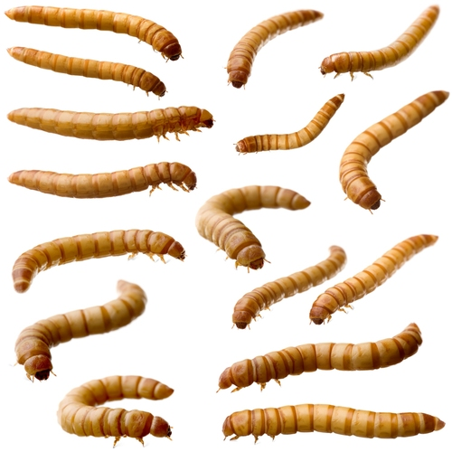

성충의 크기는 사람 새끼손가락 손톱급으로 작으며 이름처럼 갈색 계열 색깔을 띤다. 날개가 퇴화된 거저리 종류 중에서 그나마 날 수 있는 곤충이다. 저공비행으로 단거리를 날지만... 그래서 연구소 사육실같이 사육 상자에 틈이나 일부가 열려있는 사육 상자 같은 경우에는 갈색거저리가 종종 바닥으로 튀어나온다고. 대다수의 거저리를 포함한 딱정벌레 종류가 그렇듯이 성충은 체내에 취선이 있어 손으로 잡으면 웬만한 먼지벌레랑 맞먹을 만큼 냄새가 끔찍한 방어물질을 분비한다. 평소에도 미약하게나마 분비하고 다니는지라 성충 갈색거저리 사육장의 냄새를 맡아보면 방어물질 악취가 진동한다. 그래서인지 애벌래인 밀웜은 잘만 먹는 다른 도마뱀이나 햄스터도 갈색거저리 성충을 주면 악취 때문에 질겁을 해서 도망치는 경우가 많다.[1] 이에 따라 갈색거저리는 애벌래인 밀웜을 생산하는 용도로만 소비되거나 아예 성충으로 변태하기 전에 후딱 소비하는 경우가 많다. 갈색거저리의 번데기는 그 자체로 말랑말랑하고 꿈틀거리는 단백질 덩어리라 파충류나 설치류들이 좋아한다. 좁은 곳에 높은 밀도로 유충을 모아두면 애벌레 령의 수가 훌쩍 늘어난다. 아메리카왕거저리와는 달리 군거성 곤충이라 한데 모여 있어도 잘만 번데기를 짓는다.